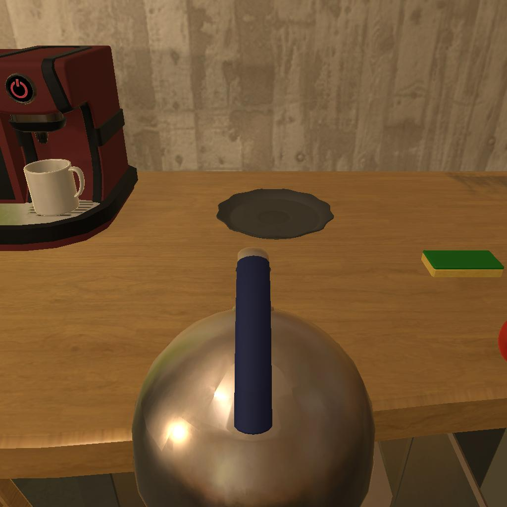

---------------------------------------------------------task: 26---------------------------------------------------------
--------------------------------------------------------------------------------------------------------------------------------------------------------------------
--------------------------------------------------------------------------------------------------------------------------------------------------------------------
Step:--------------------------------------------------------------------------14-------------------------------------------------------------------------------
----------------------------------------
VLM Prompt:
**Task**
Please perform as an embodied AI agent. Our final objective is to put two kettle in cabinet. Below is the plan for completing the task, the current observation, alongside historical data and admissible actions for the next step. Please determine the best action for the next step!
**Plan**
Below is a detailed step-by-step plan to complete the task.
1. Find a kettle.
2. Pick up the kettle.
3. Find a cabinet.
4. Place the picked-up kettle inside the cabinet.
5. Find another kettle.
6. Pick up the kettle.
7. Return to the previously located cabinet.
8. Place the picked-up kettle inside the cabinet with the first kettle.
**Current Observation**
Displayed is an image capturing the current position of the agent.
**History Information**
Displayed are the previous observations with their corresponding actions.
Current State 1:
1. Place: Sink area
2. Step Index in Plan: 1
3. Objects: Kettle
4. Action: Go to countertop 1
Current State 2:
1. Place: Countertop 1
2. Step Index in Plan: 2
3. Objects: Kettle 1
4. Action: Take kettle 1 from countertop 1
Current State 3:
1. Place: Countertop 1
2. Step Index in Plan: 3
3. Objects: Kettle 1, fruits, piece of bread
4. Action: Go to cabinet 2
Current State 4:
1. Place: Kitchen
2. Step Index in Plan: 3
3. Objects: Kettle 1, Cabinet 2
4. Action: Put kettle 1 in/on cabinet 2
Current State 5:
1. Place: Unspecified
2. Step Index in Plan: 4
3. Objects: Kettle 1, Cabinet 2
4. Action: Open cabinet 2
Current State 6:
1. Place: Kitchen
2. Step Index in Plan: 5
3. Objects: Kettle on countertop, sink, plant, other kitchen items, cabinet 2
4. Action: Examine kettle 1
Current State 7:
1. Place: Countertop
2. Step Index in Plan: 5
3. Objects: Kettle 2
4. Action: Go to coffeemachine 1
Current State 8:
1. Place: In front of a kettle on the countertop near coffee machine 1
2. Step Index in Plan: 5
3. Objects: kettle 1, coffee machine 1
4. Action: put kettle 1 in/on coffee machine 1
Current State 10:
1. Place: In front of a kettle on the countertop near coffee machine 1
2. Step Index in Plan: 5
3. Objects: Kettle, coffee machine
4. Action: Go to sinkbasin 1
Current State 11:
1. Place: Countertop near the sink
2. Step Index in Plan: 5
3. Objects: Kettle 1
4. Action: Put kettle 1 in/on sinkbasin 1
Current State 12:
1. Place: Countertop near sink
2. Step Index in Plan: 6
3. Objects: Kettle 1
4. Action: Go to cabinet 2
Current State 13:
1. Place: Countertop near the sink
2. Step Index in Plan: 7
3. Objects: Kettle
4. Action: go to cabinet 1
Current State 14:
1. Place: Countertop near coffee machine 1
2. Step Index in Plan: 8
3. Objects: Kettle, coffee machine
4. Action: Open cabinet 1
**Admissible Actions**
(1): go to countertop 1
(2): go to coffeemachine 1
(3): go to drawer 1
(4): go to sink 1
(5): go to sinkbasin 1
(6): go to cabinet 3
(7): go to garbagecan 1
(8): go to cabinet 4
(9): go to drawer 2
(10): go to fridge 1
(11): go to microwave 1
(12): go to dresser 1
(13): go to sidetable 1
(14): go to drawer 3
(15): go to drawer 4
(16): go to drawer 5
(17): go to drawer 6
(18): go to drawer 7
(19): go to drawer 8
(20): close cabinet 1
(21): put kettle 1 in/on cabinet 1
(22): examine kettle 1
**Analysis Guideline**
1. Analyze the **History Information** and determine our current step in the plan and our current place.
2. List all visible objects related to the task in the current observation.
3. Analyze the objects in the current observation based on the history and the requirements for the current step, and then determine if we can complete the step with the current observation.
4. Analyze and decide on the most appropriate action to take.
5. Summarize the analysis using the following format: "Analysis: [The summarization of the analysis], The Most Appropriate Action: (i which is the integer.): [Selected action]"
**Notes**
1. We must complete each step of the plan in order and cannot skip steps when the previous ones are not finished.
2. For "Go to" actions listed as "go to xxx [n]", interpret this as there are n distinct actions available: "go to xxx 1", "go to xxx 2", ..., "go to xxx n". Select one specific action from these options instead of using "go to xxx [n]".
3. If receptacles such as drawers, cabinets, and so forth are closed in the current observation, we may try to open them.
4. Pay attention to synonyms and ensure clarity in the terms used.
5. If there is no history available, we are at the first step and the current place is "Unknown".
6. The most appropriate action must be in the **Admissible Actions**, and we cannot generate a new action that is not in the **Admissible Actions**.
**Answer**
Please select the most suitable action by following the **Analysis Guideline**, keeping the above **Notes** in mind.
----------------------------------------
----------------------------------------
VLM Response:
Analysis: Based on the History Information, we have completed up to step 8 of the plan, which is placing the first kettle inside the cabinet. However, there appears to be a discrepancy as the actions taken do not entirely align with the plan (e.g., putting kettle 1 in/on coffee machine 1 and sinkbasin 1). The Current Observation shows a kettle in front of the agent, which aligns with step 5 of the plan: "Find another kettle." Based on the current observation, we can proceed to step 6, which is to "Pick up the kettle." The Most Appropriate Action: (22): examine kettle 1. This action will allow us to ensure that this is indeed a kettle that we can pick up, as it seems we are possibly repeating the step of finding another kettle.
The Most Appropriate Action: (22): examine kettle 1.
----------------------------------------
----------------------------------------
>>> Refine VLM Response and Get Pure Action: examine kettle 1
----------------------------------------
-----------------------------------------------------------------
Running time: 13.602847337722778 seconds
Total Money: 13.312679999999991
-----------------------------------------------------------------
-----------------------------------------------------------------
Summarization Prompt:
**Context**
Analysis: Based on the History Information, we have completed up to step 8 of the plan, which is placing the first kettle inside the cabinet. However, there appears to be a discrepancy as the actions taken do not entirely align with the plan (e.g., putting kettle 1 in/on coffee machine 1 and sinkbasin 1). The Current Observation shows a kettle in front of the agent, which aligns with step 5 of the plan: "Find another kettle." Based on the current observation, we can proceed to step 6, which is to "Pick up the kettle." The Most Appropriate Action: (22): examine kettle 1. This action will allow us to ensure that this is indeed a kettle that we can pick up, as it seems we are possibly repeating the step of finding another kettle.
The Most Appropriate Action: (22): examine kettle 1.
**Summary Format**
1. Place: [Specify the current location]
2. Step Index in Plan: [Dispkay the current step number in the plan before taking the current action]
3. Objects: [List the objects relevant to the task]
4. Action: [Describe the most appropriate action without the "(x)" and keep the integer of the object]
Please analyze the **Context** and summarize the analysis using the **Summary Format**.
-----------------------------------------------------------------
-----------------------------------------------------------------
Summarization Response:
1. Place: Cabinet
2. Step Index in Plan: 6
3. Objects: Kettle 1
4. Action: Examine kettle 1
-----------------------------------------------------------------
-----------------------------------------------------------------
Text Observation:This is a normal kettle 1
-----------------------------------------------------------------
UNSUCCEED